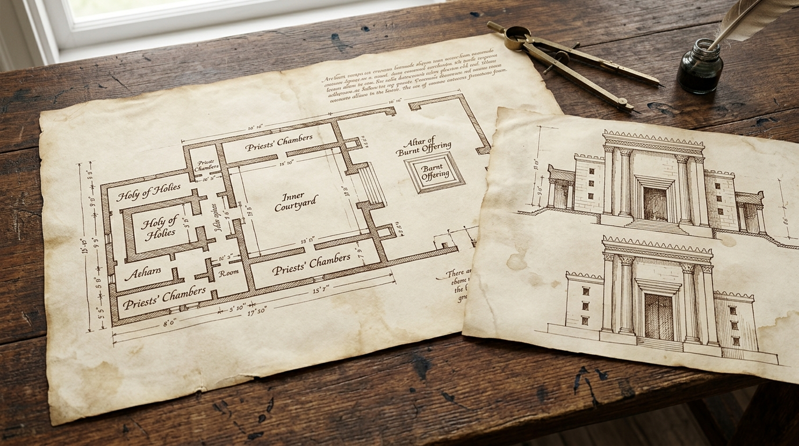

Ferramentas para sua Jornada
O estudo das Escrituras é uma jornada para a vida toda. Embora a própria Bíblia seja a nossa fonte principal, Deus levantou ao longo da história diversos estudiosos, arqueólogos e teólogos que produziram materiais incríveis para nos ajudar a cavar mais fundo e compreender o texto com mais clareza.
🗺️ Mapas e Atlas Bíblicos

Um bom Atlas Bíblico é indispensável. Visualizar as rotas do Êxodo, a divisão das 12 tribos de Israel, o tamanho do Império Babilônico ou os caminhos percorridos pelo apóstolo Paulo em suas viagens missionárias transforma a leitura. Em vez de imaginar lugares abstratos, você passa a ancorar as histórias no mundo real.
📊 Gráficos, Tabelas e Infográficos

Muitas vezes, uma imagem vale mais que mil palavras. Esquemas visuais ajudam a organizar informações complexas, como: a planta e os móveis do Tabernáculo, a genealogia de Jesus, a estrutura do Templo de Salomão ou o calendário agrícola das festas judaicas. Ter esses recursos à mão facilita muito a compreensão de livros como Levítico ou Hebreus.
📖 Dicionários e Enciclopédias

Encontrou uma palavra estranha ou um costume que não faz sentido? Um Dicionário Bíblico explica o significado de termos, nomes de pessoas e cidades, moedas, pesos e medidas da época. Já as Enciclopédias e os Comentários Bíblicos oferecem explicações detalhadas, versículo por versículo, escritas por especialistas no idioma original e no contexto histórico.
💻 Ferramentas e Apps Digitais
Hoje temos a vantagem da tecnologia. Softwares e aplicativos de estudo bíblico permitem comparar dezenas de traduções simultaneamente, buscar a raiz grega ou hebraica de uma palavra em segundos (através dos dicionários de Strong) e fazer pesquisas avançadas de temas cruzados em toda a Bíblia.
✅ Resumo
Lembre-se sempre: o material complementar serve para iluminar o texto bíblico, nunca para substituí-lo. Use mapas, gráficos e livros como "óculos" que ajudam a enxergar melhor os detalhes maravilhosos que o próprio Deus deixou registrados na Sua Palavra!